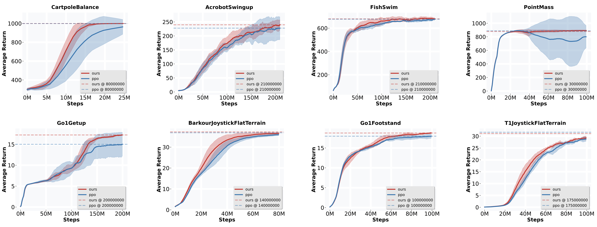

Where-to-Learn: Analytical Policy Gradient Directed Exploration for On-Policy Robotic Reinforcement Learning
Abstract
On-policy reinforcement learning (RL) algorithms have demonstrated great potential in robotic control, where effective exploration is crucial for efficient and high-quality policy learning. However, how to encourage the agent to explore the better trajectories efficiently remains a challenge. Most existing methods incentivize exploration by maximizing the policy entropy or encouraging novel state visiting regard- less of the potential state value. We propose a new form of directed exploration that uses analytical policy gradients from a differentiable dynamics model to inject task-aware, physics-guided guidance, thereby steering the agent towards high-reward regions for accelerated and more effective policy learning. We integrate our exploration approach into a widely used on-policy RL algorithm, Proximal Policy Optimization, to test and demonstrate its effectiveness. We conduct extensive benchmark experiments and demonstrate the effectiveness of the proposed exploration augmentation method. We further test our approach on a 6-DOF point-foot robot for velocity tracking locomotion, and conduct the simulation test and implement a successful sim-to-real deployment as the ultimate validation.
TL;DR
- Motivation: Exploration is cruicial for on-policy RL. Current on-policy RL methods suffer from low sample efficiency partially due to their reliance on undirected exploration, such as policy entropy maximization or novel state visiting encouraging. We propose an exploration augmentation method using Analytical Policy Gradients (APG) and a differentiable dynamics model. We try to injects task-aware and physics-guided guidance into exploration, transforming it into a task-oriented directed process that improves sample efficiency and training stability.
- Method: There are 2 policies involved in our method: a priamry policy as the main policy to be optimized and an exploratory policy providing the guidanced for exploration. We employ the differentiable dynamics and analytical policy gradient method to obtain an temporary exploratory policy by optimizing the policy parameter with a short-horizon discounted return as objective. The temporary exploratory policy and the primary policy are run parallelly to collect trajectory samples for policy updates, resulting the primary data and exploratory data. After each iteration, the exploratory policy is discarded, while the primary policy is updated using both data together. Intuitively, the idea behind the design is that the temporary exploratory policy acts like a scout to discover ”locally” higher advantage state action area for primary policy updates. Basically, the exploratory policy here provides another informative data source for the policy learning, which fuses the task information and dynamics priors into the policy learning.
- Results:
We conduct extensive benchmark experiments and demonstrate the effectiveness of the proposed exploration
augmentation method for improving sample efficiency and training stability.
We further test our approach on a 6-DOF point-foot robot for velocity tracking locomotion, and conduct the simulation test and implement a successful sim-to-real deployment as the ultimate validation. See simulation test and sim-to-real deployment results below.
Benchmark Results
- Discussion:
- The proposed method bridges the gap between data-expensive on-policy reinforcement learning and sample-efficient analytical gradient approaches. RL, known as a zero-order gradient based approach, is inefficient but fexible for reward form. APG, a first-order gradient based approach, is efficient but limited to differentiable reward functions. Our approach has the potential to unify both advantages by employing analytical gradients only to guide exploration, which only requires the task reward function to be differentiable. In main policy update, can still optimize over a broader reward function that includes non-differentiable regularization terms, thereby offering greater compatibility than purely gradient-based methods.
- Why we keep part of data from primary policy rollout for main policy update? (1) The APG-guided exploratory policy is short-horizon and may get trapped in local optima, reducing state-action coverage. Retaining PPO's undirected samples preserves global exploration diversity and prevents local convergence. (2) Analytical gradients may be inaccurate due to model errors or discontinuities, producing poor exploratory behaviors. PPO data provides robustness and prevents policy degeneration under such cases.
- Our exploration augmentation method may lose effcacy under sparse reward settings, such as the sparse goal-reaching task.
- Our method heavily relies on the fidelity of the differentiable dynamics simulation.
Method Overview